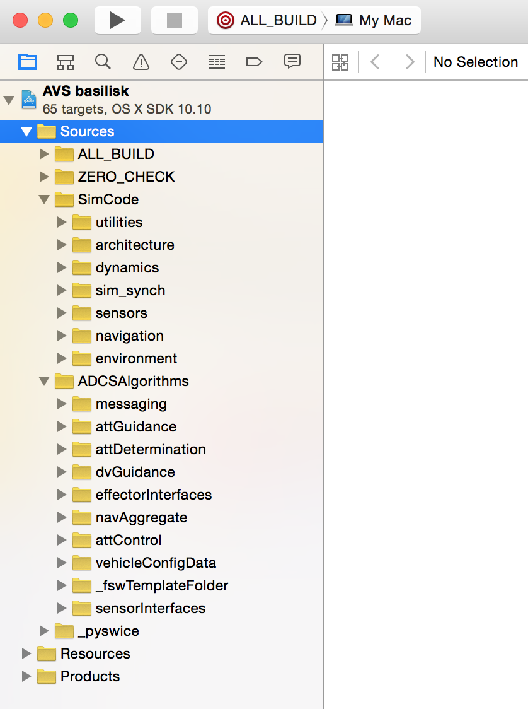

Setup On macOS¶
These instruction outline how to install Basilisk (BSK) on a clean version of macOS. Basilisk requires the use of Python 3. Don’t use the Python 2 system that comes with macOS.
The following python package dependencies are automatically checked and installed in the steps below.
pandasnumpymatplotlibpytestPillowconan>=1.40.1, <=1.59.0parse>=1.18.0
Attention
If you are running a new Apple computer with the M-series ARM64 processor, be sure to download a
version of Python that is compatible with M-series processor. The
Python.org web site contains Universal binaries for Python 3.9 and
onward. Regarding the python packages via pip and brew, the required packages
can all be installed readily in a native form using the standard installation instructions below.
Developer Software Tools¶
In order to run Basilisk on macOS, the following software is necessary:
Get the Apple Xcode Developer tool from the App Store
After Xcode is installed, start up the program to let it finish installing development components
Open a Terminal window to install the command line tools using:
$ xcode-select --install
(Optional) Get the SourceTree or GitKraken application to be able to pull and manage a copy of Basilisk
(Optional) Get the PyCharm application to be able to edit python source files
Install Python 3¶
To install Python 3 on macOS there are two common options:
(Preferred) Download the installer package from python.org. This will configure your your macOS environment for Python 3 and can readily be upgraded by downloaded a newer installer package.
Install python 3 through the HomeBrew package management system. The site has the command line to install homebrew from a terminal window using
brew install python3.
Install HomeBrew Support Packages¶
Install HomeBrew using a Terminal window and pasting the install script from the HomeBrew web site.
The new SWIG version 4 is compatible with Basilisk. Install the SWIG software package using:
$ brew install swig
If you want to install the HomeBrew version of
cmake, you can do so with:$ brew install cmake $ brew link cmake
You need at least version 3.14 or higher.
Setting up the Python Environment¶
Note
The following instructions recommend installing all the required python packages
either in a virtual environment or in the user ~/Library/Python folder. This has the benefit that
no sudo command is required to install and run Basilisk, and the user Python folder can readily
be replaced if needed. If you are familiar with python you can install in other locations as well.
Note
If you wish to use the HomeBrew version of python, or generally have multiple copies of python installed on your system, configure the CMake Python paths as described in Using a Custom Python Installation after following these instructions.
Note
We suggest you remove any other python packages (such as Anaconda), or change the path in your terminal shell if you really want to keep it.
In the following instructions, be sure to follow the sequence of tasks as outlined below.
Using A Python Virtual Environment¶
Attention
We strongly recommend using a python virtual environment while installing basilisk or running basilisk modules. For more info, read this. The virtual environment has the benefit that you won’t have conflicts with other versions of Python or python packages that your computer has installed. It lets you install packages specific to this environment and they won’t interfere with other python projects you may have. However, you must turn this environment on and off each time you want to use it.
The following steps show how to create, active ad de-activate a virtual environment. The remaining installation steps work regardless if done within a virtual environment or not.
In a Terminal window change your current directory to be the Basilisk folder, then create a virtual environment using:
$ python3 -m venv .venv
This creates a hidden folder inside the Basilisk folder which will store all the python packages and environment information.
Activate virtual environment when needing configure, build or run Basilisk:
$ source .venv/bin/activate
The above step will add (.venv) before the prompt.
Deactivate the virtual environment to return to the normal operating system environment:
(.venv) $ deactivate
Installing required python support packages¶
Basilisk uses
conanfor package managing. In order to do so, users must ensurewheelis installed and installconan:(.venv) $ pip3 install wheel conan
The conan repositories information is automatically setup by
conanfile.py.Warning
If you are upgrading from a version of Basilisk prior to 1.8.0, be sure to delete the
.conanfolder in your home directory to create a clean copy compatible with the current build system.The following python packages are the minimum required packages for Basilisk. They are installed and checked for the correction version in the steps below.
pandasnumpymatplotlibpytestPillowconan>=1.40.1, <=1.59.0parse>=1.18.0
Optional Packages: The above directions install the Basilisk base software. There are a series of optional packages that enhance this capability, including
pytestto run an automated test suite of unit and integrated tests.
Build Project Process via Terminal¶
When all the prerequisite installations are complete, the project can be built as follows.
The
conanfile.pywill setup, configure and run the Basilisk build. For a basic installation, from the root Basilisk folder use:(.venv) $ python3 conanfile.py
For other configure and build options, see Building the Software Framework. This creates the Xcode project in
dist3.Warning
Note that the default configuration is building for Release. When you open the project in XCode, note that you need to build for profiling. Otherwise you get errors about not being able to find appropriate conan installed libraries.
The
python3 conanfile.pyprocess will verify that the minimum required Basilisk python packages are installed, and that the version is correct. If not, the user is prompted to install the package withpip3in the system or user folder.Note
If you wish to use the another version of python 3 configure the Python paths in Using a Custom Python Installation
Warning
If you get an error message in cmake saying it can’t find the compiler tools, open a Terminal window and type:
$ xcode-select -p
This should return:
/Applications/Xcode.app/Contents/Developer
If instead you get a different director such as
/Library/Developer/CommandLineTools, then correct this compiler directory path using:sudo xcode-select --reset
Now clear the Cmake cache and try running the configure and build process again.
To test your setup you can run one of the Integrated Example Scripts:
For example, in the terminal window, make
basilisk/examples/the current directory.Run one of the tutorial scenarios, such as:
(.venv) $ python3 scenarioBasicOrbit.py
Building with IDE¶
Conan file will build the project by default. However, this can take longer to compile than building the Basilisk project in Xcode directly. Further, if you are developing for Basilisk you often just want to configure the Basilisk Xcode project file and not build right away. To change the default behavior disable the automatic build using:
Set the
buildProjectargument toFalseusing:(venv) $ python3 conanfile.py --buildProject False
Open the Xcode project file inside
dist3. This isbasilisk.xcodeprojon macOS.The source code should appear and be ready for use
Ensure that the target scheme is set to
ALL_BUILDas shown in figure aboveWithin Xcode now go under Product/Build For/Profiling to build for Release.
{kind=link}
FAQs¶
Q: Experiencing problems when trying to change the directory in which to clone the url
A: clone it in the default directory, and copy it into the preferred one after it is done cloning.
Q : Permission denied when using brew
A: Add sudo to the start of the command. If you do not have superuser access, get superuser access.
Q : I updated my macOS system to the latest released, and I can no longer run CMake or build with Xcode.
A: Do a clean build as described in FAQ - Frequency Asked Questions.